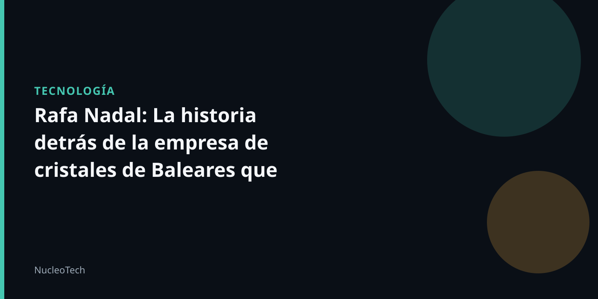

Un negocio de humildes orígenes
En una entrevista reciente, Rafa Nadal recordó cómo su padre, Sebastián Nadal, construyó la mayor empresa de cristales de Baleares en Mallorca, empezando desde cero. Esta historia familiar inspiró la dedicación y el trabajo duro que caracterizó su carrera deportiva.
La empresa, Vidres Mallorca, se especializa en cristales planos y de todo tipo, así como en persianas. Durante décadas, estuvo controlada al 50% por Sebastián Nadal y su hermano, Toni Nadal. Esta familia de empresarios Mallorquines ha sido fundamental en la historia de la empresa.
Un legado de dedicación y trabajo
- La empresa de Vidres Mallorca se ha convertido en un ejemplo de cómo la dedicación y el trabajo duro pueden llevar a grandes logros.
- La historia de Rafa Nadal y su familia es un recordatorio de que el éxito no se logra solo con la suerte o la riqueza, sino con la perseverancia y la pasión.
- La empresa de Vidres Mallorca sigue creciendo y evolucionando, y su legado continúa inspirando a nuevas generaciones de empresarios y deportistas.
En la actualidad, Rafa Nadal se encuentra ocupado con diversas actividades, incluyendo academias deportivas, centros de salud, inversiones, hoteles, renovables, inmobiliario y negocios relacionados con puertos para megayates. Sin embargo, la historia de su familia y su empresa es un recordatorio constante de la importancia de la dedicación y el trabajo duro en la construcción de un éxito duradero.